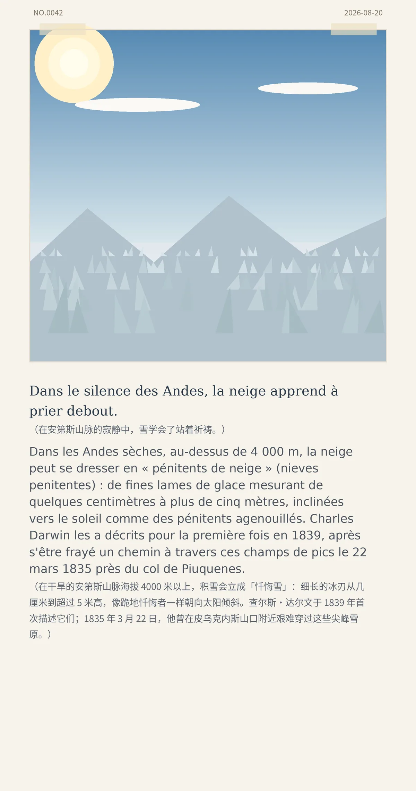

Dans le silence des Andes, la neige apprend à prier debout.（在安第斯山脉的寂静中，雪学会了站着祈祷。）
Dans les Andes sèches, au-dessus de 4 000 m, la neige peut se dresser en « pénitents de neige » (nieves penitentes) : de fines lames de glace mesurant de quelques centimètres à plus de cinq mètres, inclinées vers le soleil comme des pénitents agenouillés. Charles Darwin les a décrits pour la première fois en 1839, après s'être frayé un chemin à travers ces champs de pics le 22 mars 1835 près du col de Piuquenes.（在干旱的安第斯山脉海拔 4000 米以上，积雪会立成「忏悔雪」：细长的冰刃从几厘米到超过 5 米高，像跪地忏悔者一样朝向太阳倾斜。查尔斯·达尔文于 1839 年首次描述它们；1835 年 3 月 22 日，他曾在皮乌克内斯山口附近艰难穿过这些尖峰雪原。）
054eaf7c3b13a30b冷知识由执笔的模型自行查证。逐条断言、来源与所引原句存档在纯文字副本里，未经程序逐字校验，留作事后核实。